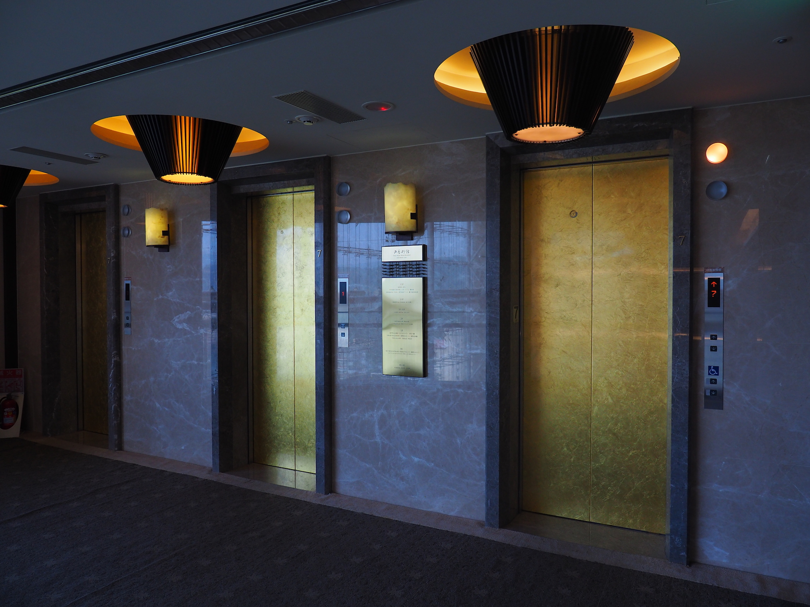

南投:日月行館，俯瞰日月潭
日月潭
一個我大約 15 年沒有去過的地方
一個每次聽到，第一印象就是「這不是觀光客才會去的地方嗎？」
這次的公司部門旅遊就選定了這裡，當然原因除了日月潭已經很久沒有去過之外
還有一個特別的原因，就是 有人想要住日月潭高級飯店
可能是公司風氣，飯店都住得不便宜，讓我們這些年輕人有點頭痛，不過今年也沒辦法出國，年輕的同事們都出國玩了，剩下的就是一些懂的享受生活的同事(?)，最後我們就揪了五組人，約好了 8/11-8/12 兩天一日遊囉
不過與家人討論過後，我們決定玩三天兩夜，分成：
- Day1 (08/10): 彰化鹿港：鹿港老街
- Day2 (08/11): 南投日月潭：日月行館
- Day3 (08/12): 南投日月潭：向山遊客中心與 CNN 十大美景-向山環湖自行車道
從鹿港到日月潭大約 1.5 小時的車程吧，中間花了點時間與家人討論第一個落腳點要在哪裡，最後我們決定要落腳在伊達邵自行車步道
開到了一個 Y 字路口，映入眼簾是美麗的湖景，我們終於到了！
真的好美，用相機拍完這張照片後，我趕緊上車繞著湖邊前往我們的目標。後來，不知不覺開進了一個大下坡，路越來越小條，地上全是泥濘，跟我們想像中的自行車道好像有些不同，不過看到了美麗的日月潭石標
由於家中成員不方便下車，我又透過手機確認了一下位置似乎有點不正確，但其實很明顯圖中許多人行走的地方應該就是步道了，但實在是不知道怎麼過去，因此我們直接透過車內導航往伊達邵碼頭前進，出發前看到了一朵美麗的花，應該算是蘭花的一種
還有美麗的白色蝴蝶蘭，生長在一棵樹的樹幹上，美極了
伊達邵碼頭
大約開了 10 分鐘後，終於到了伊達邵碼頭，也就是伊達邵遊客中心。由於這個地方同時有碼頭、老街與商店街，因此人滿為患，我們在停車場外等了大約20分鐘終於看到一部車要離開，我們剛好補上離開的那個車位。下了車，眼前正前方就是碼頭湖景，一堆遊艇與遊客，熱鬧極了。
放遠望去，還可以看到伊達邵碼頭最知名的設施之一：日月潭纜車
當時大約是下午一點多左右，其實看了看伊達邵老街現今已經有點像是夜市的感覺了，有眾多的小吃與零食可以選擇，不過今天晚上聽說有好料可以吃，看了一下自己的肚子只好作罷了～
與碼頭上的售票人員確認我爸也可以上船後，我們就決定坐船到水社碼頭，購買的是票價300元的一票玩到底，只要到下午五點前都可以一直坐到想做的碼頭
上船後，沒有拍遊艇的內裝，因為看到湖景我就受不了了XD，一直看著遊艇製造的浪花，再會了伊達邵，晚點我們還會再回來的:)
天氣陰天，雖然有點悶熱但沒有太陽曬還是挺舒服的，就快到水社碼頭了！
此時抬頭一看，看到了我們今天晚上要住的夭壽貴飯店：日月行館，遠看有如帆船的面貌實在是很霸氣啊～
終於到了水社碼頭，不過最慘的是：水社碼頭的無障礙電梯竟然壞掉了！我們必須跟旁邊飯店借電梯到上面去，蠻不方便的。
水社碼頭
這裡是水社碼頭的商店街區，從其它的旅遊網誌中都可以找到許多餐廳的介紹，我們當時也覺得肚子餓了，可以來吃個午餐，最後我們決定吃「阿榮邵族麵」，邵族麵是什麼口味，還蠻想試試看的


邵族麵的價位是 100 元，可能是因為是觀光區的緣故所以比我們想像的高了一些，我們點了三碗邵族麵一個邵族泡飯（我哥真的很愛吃飯……），首先是香噴噴的邵族泡飯，感覺就是蒸肉燥 + 白飯，我沒有吃這一道，但味道實在是蠻香的，我哥說很推薦！
再來是我們的邵族麵，小白菜夾雜著山豬肉與清湯，非常的清淡，但格外好吃，非常推薦
吃飽喝足後我們就坐在桌上討論著水社附近的景點，因為日月行館與涵碧樓都在這個碼頭上，因此周邊有一個「涵碧」步道，步道入口也有一個日月潭的標誌
步道平緩且有些許涼意，步道左側雖然大多被樹木與花草所掩蓋，但還是有給予賞景的地方，這張就是從其中一個縫隙中拍出去的樣貌，還可以看到碼頭上有一個宮廷式的遊艇，蠻特別的，而且碼頭入口也有標示著日、月兩個象徵
每艘遊艇經過時，都不免用相機記錄一下
最後走到了蔣公搭船遊湖的碼頭 蔣介石碼頭，碼頭是封閉的不可進入，僅能從旁邊欣賞，真的很有中國風的味道。
最後我們從涵碧步道再回到水社碼頭搭船，坐回原目的地伊達邵碼頭後開車至日月行館，紀錄這最後水社碼頭眾多遊艇停靠的壯觀場面，藏著知名阿婆茶葉蛋的玄光碼頭，我們只能靜靜的看著離我們而去，因為時間關係，我們就沒有停靠在此了
日月行館
終於到了這次部門旅遊的重點：日月行館
日月行館應該是日月潭中座落地點最高(涵碧半島)的五星級飯店，但知名度似乎沒有涵碧樓高，聽船上的工作人員說，有三個字可以形容涵碧樓，叫做「超級貴」，如果涵碧樓是「超級貴」的話，那日月行館可以說是「夭壽貴」了……
我們直接從伊達邵直接出發到日月行館，環湖逆時針方向，大約 20 分鐘的車程就會開到剛剛逛過的水社碼頭，我們繼續往上開，往日月行館的爬坡算是蠻抖的，不過就是因為這樣才可以全覽群山環湖的美貌。
大廳
開到大門後，我原以為五星級飯店應該會有人來泊車，或是迎賓，結果都沒有……我直接下車後往大廳走去，直接進行 check-in，結束後，給我們了一個大紙袋，裡頭裝著四個馬卡龍，四張房卡，晚餐與早餐則是使用房卡所以沒有收券，最後是四張飲料 bar 提供的迎賓雞尾酒，其中我最喜歡的就是他竟然給了我們四張房卡，這對於我們會獨立進出的人真的很方便。
大廳是由一個擺設映出「日、月」的樣貌，雖然看似上方的吊飾有點像是嬰兒瓶刷xD，大廳挑高 45 米非常氣派
想想接下來這一天都會待在這裡心中開始興奮起來了！搭電梯時還嚇到，竟然是金色的

房間：日月客房
這次我們含服務費總共是 $16146 元新台幣，四人房約 17 坪的日月客房，房中有著濃烈的日式與南洋風味，木質地板配合竹門與實心木門，非常的扎實，幾乎櫃子桌子等傢俱都是木製的，非常有質感
家人坐在床上的比例圖，這個床真的非常大，可以睡兩大一小了，兩個人睡空間綽綽有餘，
桌上有迎賓水果，旁邊四個點心就是 check-in 所發的馬卡龍點心
玄關進來就是一個小吧台，上面放著四罐飲用水，膠囊咖啡機與咖啡組合，以及茶杯，還有一個誇張的點菜單
為何要說點菜單很誇張呢？因為它的價位我們實在不敢恭維啊～一碗牛肉麵九百大洋……
打開下方的冰箱，有八罐的氣泡水果醋與冰過的四罐飲用水
廁所其實是我最喜歡的，有兩個洗臉台，可看湖景的溫泉池，以及靠近會打開的迎賓馬桶，可惜這兩天都沒拍廁所裝潢……
沒關係！我們趕緊去窗檯看側湖景吧！
我們位在七樓高樓層，雖然我以為我們會更高，但是這樣的湖景實在是非常迷人
向左看可以看到純金的船桅，以及側邊湖景，下方是知名的涵碧樓，遠方是明天要去的向山遊客中心
往右看可以看到日月潭大飯店，CNN 十大美景之一的環湖自行車步道，以及教師會館
夜晚的大廳
天色漸漸暗下來，走出房門時，大廳已煥然一新，原來大理石的擺飾會亮起來！真的很美
最後我們拍了一張合照，就趕緊去吃晚餐囉！
晚餐：萬象廳
晚餐是包含在住宿中的，若沒有購買大約是一人 1800 元，這樣算下來包晚餐是非常劃算的！
海鮮區，食材都挺新鮮
一次給半隻的沙公，我吃半隻就快投降了……
甜點區也非常的豐富，有各式蛋糕與飲料
不要問我為什麼晚餐照片這麼少，因為顧著吃不想拍照XD
飲料 bar
吃飽喝足，休息一下，晚上九點前可以兌換一人一杯迎賓雞尾酒
此時，爸爸突然舉起酒杯，感謝這次我帶他們出來玩，也順便慶祝父親節，今日的行程大約到此結束，接下來就是第三天早上的健身房、泳池以及隔日早上日月行館觀景台的湖景
健身房、泳池
健身房，雖然我喜歡在這種地方運動，不過空氣實在是有點悶，因此就站在此看看湖景，如果排除沒有空調，在此運動一定非常的棒
之後就是泳池了，泳池位於最高樓層 12 樓，一邊游泳，一邊俯瞰日月潭真的很幸福
往飯店方向望去，可以看到金色船桅，旁邊就是我們住宿的地點，感覺離泳池有點距離
回到房間後，洗了澡並且飲用一杯膠囊咖啡機所沖泡的黑咖啡後，我們就準備去吃早餐
今天天氣非常的好，窗戶外的日月潭空氣非常的乾淨，很期待等等要去的向山遊客中心
早餐：萬象廳
早上可以看到的點更多了，像是可以在外面看湖景與花園佈景用餐
炸物區：擺放的炸魚、雞塊等相關餐點
這邊可以燙青菜，煮陽春麵等
中式熟食：有粥以及相關配菜，味噌湯、酸辣湯、滷肉飯等
水果區：提供生菜沙拉以及水果
當然不只吃這些，但甚麼顏色都有就讓我很想拍一張～
我哥看起來吃得很開心XD
天空步道：日月行館觀景台
說真的，已經對日月潭逐漸淡忘了，也不會特地去網路上查相關的照片與影片，就只是認為日月潭為一個觀光客才會去的地方，爬上觀景台後，完全抹滅了這種不好的印象，眼前的美景一覽無遺，真的堪稱必去景點之一。
天空步道由數片強化玻璃所構成，大約是 11 層樓高，地板的強化玻璃有做一點點的飯店 Logo 浮水印，所以並不是很恐怖，但懼高症的人還是別輕易嘗試
但如果往湖景看，真的就完全遺忘腳下的恐懼，180 度全湖景都在眼前！
湖中的遊艇正在開往玄關碼頭，會經過光華島 (給邵族現今稱為拉魯島)，島嶼在俯瞰的狀況下也變得非常的小，
往右邊看，就是能從房間就可以看到的向山遊客中心，今天天氣看起來不錯，等等到那邊可以好好逛一逛
其實觀景台的另一面是一大片的落地玻璃，可以看到另一面的湖景，也是今天我們要去的向山自行車到的其中一的區段，重點是可以看得更高更廣了～湖中左上方，且形狀方方正正的建築正是日月潭大飯店，前方就是向山自行車道的其中一段
又走回另一邊的觀景台，飯店說這個玻璃可以承受非常大的重量。你看，我這麼安心地躺著想必挺安全的吧！
心得
其實飯店整體還蠻舒適的，雖然設施的確少了些，但不論是客房的裝潢、還有陽台的湖景、以及最合我胃口的廁所，整體還是蠻棒的，雖然價格真的有點高了一點，以公司補助的金額還要花個 5000 才可以享受這奢侈的一趟旅程，雖然我現在還是覺得「住宿只要能住就好」，住宿的錢還不如花在吃跟玩以及交通上面，但經過這次的經驗我也覺得帶家人來住住看這種高級飯店也是挺棒的，畢竟還座落在涵碧半島最高點，看到的景致相對的也最棒，若下次有機會可以嘗試涵碧樓，說真的「我還蠻想試試的！」附上最後一張照片，我們準備要去向山遊客中心騎自行車囉！